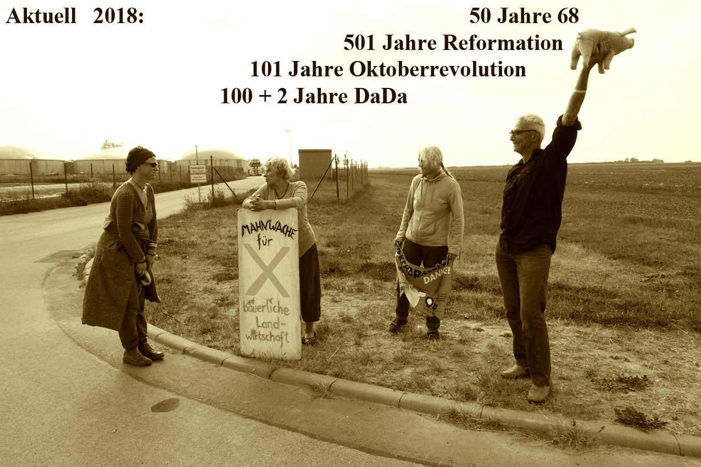

Druckkosten
Die Ferkelfabrik ist vor zwei Jahren abgebrannt - Eine Katastrophe mit Ansage eingetroffen.
Die Brandschutzklage ist nicht abgeschlossen.
Die TOLLENSETALER STIMME aber gibt es immer noch. Druckkosten fehlen nach wie vor.
100 Mrd. sind für zusätzliche Aufrüstung verplant.
2023: 100 + 7 Jahre DaDa

Unsere Redakteure arbeiten ehrenamtlich, selbst im Widerstand.
Druckkosten für die nächste Ausgabe werden immer gebraucht.
Wir können auch Spendenquittungen ausstellen, weil gemeinnützig.
Einzahlungen zur Unterstützung unserer Zeitung bitte hier:
IBAN: DE70 1506 1638 0001 1646 19
Das Einfache das schwer zu machen ist
Schon seit sieben Jahren wird die TOLLENSETALER STIMME durch unsere „ehrenamtlichen“ Redakteure herausgegeben. Unser unabhängiges Informationsblatt für Freunde, Bewohner und Gäste des Tollensetals hat eine immer breitere Leserschaft gefunden, weit über die Gemeindegrenzen hinaus. Wen alles die weitergesandten PDF-Dateien erreichen wissen wir nicht. Aber es ist klar, dass die Einwohner Alt Tellins dabei leer ausgehen, wenn mangelnde Druckkosten nur minimale Papieraufagen ermöglichen. Auch wenn nicht alle unsere Dorfzeitung lieben, so mancher hätte sie trotzdem gerne, manchmal auch nur, um im Bilde zu sein und mitreden zu können. Um dieses Problem zu lösen, hat unsere Redaktion nun die Gemeinde um einen Druckkostenzuschuss gebeten. Unser Kultur u. Sporthaushalt wird doch alljährlich nicht ausgeschöpft. Denn wenn der Fußball zusätzliches Geld benötigt, außerhalb der üblichen 50 € für andere Vereine, gibt es einen Nachtragshaushalt. Wir sitzen ja wirklich alle im gleichen Boot. 2007 warnte der ehemalige Bürgermeister Wiemer die Ratsmitglieder davor, bei ihrer Interessensvertretung zwischen Alteingesessenen und sogenannten Zugezogenen zu unterscheiden. „Man darf nicht vergessen: Wenn diese Leute hier nicht wohnen würden, hätten wir viele Ruinen und nur noch 250 Einwohner in der Gemeinde.“ Eine Schweinefabrik gab es zu diesem Zeitpunkt noch nicht, aber die Aussage: „Wir werden alles tun, damit diese Anlage nicht kommt“ von Bürgermeister Karstädt. Später ergänzt er, dass dies unabhängig vom Investor auch für die geplante Grössenordnung gelte. Aber nun steht sie da, die stinkende Güllefabrik, unübersehbar von Nah und Fern, durchgedrückt von der Landesregierung... mit Verweis auf die Imagekampagne „MV tut gut“! Es gibt überhaupt keinen Grund, das resigniert hinzunehmen. Denn gemeinsam sind wir stärker. Wenn diejenigen, die versprachen, „alles zu tun, damit diese Anlage nicht kommt“ mit denjenigen die versprechen „alles zu tun, damit diese Anlage verschwindet“ endlich kooperieren würden, dann könnte ein friedlicher Neuanfang beginnen. 25 Jahre nach der staatlichen Wiedervereinigung ist es wirklich an der Zeit, kommunale Selbstverwaltung auf unterster Ebene zu versuchen. Also liebe Einwohner, wer gerne ein paar Druckausgaben unserer Dorfzeitung in die eigenen Hände nehmen möchte, der soll das kundtun. Dieser Ausgabe liegt eine Wunschzettelvorlage bei. Wir sammeln und teilen der Gemeindevertretung die Zahl der potentiellen Papierleser unserer Dörfer mit. Wir hoffen auf das Ende der Tollheit.Tollensetaler Stimme 2015/03, S.2